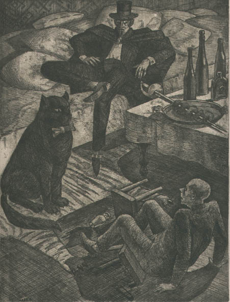

Извлечение мастера
«Рукописи не горят» и возвращение в подвальчик у Арбата
Краткое содержание главы
Внезапно в спальне Воланда воцарилась домашняя, почти уютная тишина. Маргарита сидела за столом в изношенном халатике, гордая и готовая уйти, ничего не прося — «Никогда и ничего не просите! Никогда и ничего, и в особенности у тех, кто сильнее вас. Сами предложат и сами все дадут!»
Воланд усмехнулся и предложил ей загадать одно заветное желание. И тут Маргарита, забыв о себе, попросила — не за Мастера, а за несчастную Фриду, чтобы той больше никогда не подавали платка. Потрясенный Воланд заметил, что милосердие иногда стучится в сердца самым неожиданным образом, и, оставив дело Фриды самой Маргарите («вы ведь просили за нее, вам и прощать»), исполнил ее главное, невысказанное желание.
Сквозь дымку комнаты появился бледный, исхудавший человек в больничном белье — Мастер. Маргарита бросилась к нему, целовала его лоб, а Бегемот тем временем извлек из-под дивана совершенно целую, ничуть не тронутую огнем пачку рукописей со словами Воланда, ставшими бессмертными: «Рукописи не горят». Одним мановением руки Азазелло вернул влюбленных в их тихий полуподвальчик, с расцветающей за окном майской сиренью.
В спальне Воланда все оказалось, как было до бала. Воланд в сорочке сидел на постели, и только Гелла не растирала ему ногу, а на столе, там, где раньше играли в шахматы, накрывала ужин. Коровьев и Азазелло, сняв фраки, сидели у стола, и рядом с ними, конечно, помещался кот, не пожелавший расстаться со своим галстуком, хоть тот и превратился в совершеннейшую грязную тряпку. Маргарита, шатаясь, подошла к столу и оперлась на него. Тогда Воланд поманил ее, как и тогда, к себе и показал, чтобы она села рядом.
– Ну что, вас очень измучили? – спросил Воланд.
– О нет, мессир, – ответила Маргарита, но чуть слышно.
– Ноблесс оближ, – заметил кот и налил Маргарите какой-то прозрачной жидкости в лафитный стакан.
– Это водка? – слабо спросила Маргарита.
Кот подпрыгнул на стуле от обиды.
– Помилуйте, королева, – прохрипел он, – разве я позволил бы себе налить даме водки? Это чистый спирт!
Маргарита улыбнулась и сделала попытку отодвинуть от себя стакан.
– Смело пейте, – сказал Воланд, и Маргарита тотчас взяла стакан в руки. – Гелла, садись, – приказал Воланд и объяснил Маргарите: – Ночь полнолуния – праздничная ночь, и я ужинаю в тесной компании приближенных и слуг. Итак, как чувствуете вы себя? Как прошел этот утомительный бал?
– Потрясающе! – затрещал Коровьев, – все очарованы, влюблены, раздавлены, сколько такта, сколько умения, обаяния и шарма!
Воланд молча поднял стакан и чокнулся с Маргаритой. Маргарита покорно выпила, думая, что тут же ей и будет конец от спирта. Но ничего плохого не произошло. Живое тепло потекло по ее животу, что-то мягко стукнуло в затылок, вернулись силы, как будто она встала после долгого освежающего сна, кроме того, почувствовала волчий голод. И при воспоминании о том, что она не ела ничего со вчерашнего утра, он еще более разгорелся. Она стала жадно глотать икру.
Бегемот отрезал кусок ананаса, посолил его, поперчил, съел и после этого так залихватски тяпнул вторую стопку спирта, что все зааплодировали.
После второй стопки, выпитой Маргаритой, свечи в канделябрах разгорелись поярче, и в камине прибавилось пламени. Никакого опьянения Маргарита не чувствовала, кусая белыми зубами мясо, Маргарита упивалась текущим из него соком и в то же время смотрела, как Бегемот намазывает горчицей устрицу.
– Ты еще винограду сверху положи, – тихо сказала Гелла, пихнув в бок кота.
– Попрошу меня не учить, – ответил Бегемот, – сиживал за столом, не беспокойтесь, сиживал!
– Ах, как приятно ужинать вот этак, при камельке, запросто, – дребезжал Коровьев, – в тесном кругу...
– Нет, Фагот, – возражал кот, – бал имеет свою прелесть и размах.
– Никакой прелести в нем нет и размаха тоже, а эти дурацкие медведи, а также и тигры в баре своим ревом едва не довели меня до мигрени, – сказал Воланд.
– Слушаю, мессир, – сказал кот, – если вы находите, что нет размаха, и я немедленно начну придерживаться того же мнения.
– Ты смотри! – ответил на это Воланд.
– Я пошутил, – со смирением сказал кот, – а что касается тигров, то я велю их зажарить.
– Тигров нельзя есть, – сказала Гелла.
– Вы полагаете? Тогда прошу послушать, – отозвался кот и, жмурясь от удовольствия, рассказал о том, как однажды он скитался в течение девятнадцати дней в пустыне и единственно, чем питался, это мясом убитого им тигра. Все с интересом прослушали это занимательное повествование, а когда Бегемот кончил его, все хором воскликнули:
– Вранье!
– И интереснее всего в этом вранье то, – сказал Воланд, – что оно – вранье от первого до последнего слова.
– Ах так? Вранье? – воскликнул кот, и все подумали, что он начнет протестовать, но он только тихо сказал: – История рассудит нас.
– А скажите, – обратилась Марго, оживившаяся после водки, к Азазелло, – вы его застрелили, этого бывшего барона?
– Натурально, – ответил Азазелло, – как же его не застрелить? Его обязательно надо было застрелить.
– Я так взволновалась! – воскликнула Маргарита, – это случилось так неожиданно.
– Ничего в этом нет неожиданного, – возразил Азазелло, а Коровьев завыл и заныл:
– Как же не взволноваться? У меня у самого поджилки затряслись! Бух! Раз! Барон на бок!
– Со мной едва истерика не сделалась, – добавил кот, облизывая ложку с икрой.
– Вот что мне непонятно, – говорила Маргарита, и золотые искры от хрусталя прыгали у нее в глазах, – неужели снаружи не было слышно музыки и вообще грохота этого бала?
– Конечно не было слышно, королева, – объяснил Коровьев, – это надо делать так, чтобы не было слышно. Это поаккуратнее надо делать.
– Ну да, ну да... А то ведь дело в том, что этот человек на лестнице... Вот когда мы проходили с Азазелло... И другой у подъезда... Я думаю, что он наблюдал за вашей квартирой...
– Верно, верно! – кричал Коровьев, – верно, дорогая Маргарита Николаевна! Вы подтверждаете мои подозрения. Да, он наблюдал за квартирой. Я сам было принял его за рассеянного приват-доцента или влюбленного, томящегося на лестнице, но нет, нет! Что-то сосало мое сердце! Ах! Он наблюдал за квартирой! И другой у подъезда тоже! И тот, что был в подворотне, то же самое!
– А вот интересно, если вас придут арестовывать? – спросила Маргарита.
– Непременно придут, очаровательная королева, непременно! – отвечал Коровьев, – чует сердце, что придут, не сейчас, конечно, но в свое время обязательно придут. Но полагаю, что ничего интересного не будет.
– Ах, как я взволновалась, когда этот барон упал, – говорила Маргарита, по-видимому, до сих пор переживая убийство, которое она видела впервые в жизни. – Вы, наверное, хорошо стреляете?
– Подходяще, – ответил Азазелло.
– А на сколько шагов? – задала Маргарита Азазелло не совсем ясный вопрос.
– Во что, смотря по тому, – резонно ответил Азазелло, – одно дело попасть молотком в стекло критику Латунскому и совсем другое дело – ему же в сердце.
– В сердце! – воскликнула Маргарита, почему-то берясь за свое сердце, – в сердце! – повторила она глухим голосом.
– Что это за критик Латунский? – спросил Воланд, прищурившись на Маргариту.
Азазелло, Коровьев и Бегемот как-то стыдливо потупились, а Маргарита ответила, краснея:
– Есть такой один критик. Я сегодня вечером разнесла всю его квартиру.
– Вот тебе раз! А зачем же?
– Он, мессир, – объяснила Маргарита, – погубил одного мастера.
– А зачем же было самой-то трудиться? – спросил Воланд.
– Разрешите мне, мессир, – вскричал радостно кот, вскакивая.
– Да сиди ты, – буркнул Азазелло, вставая, – я сам сейчас съезжу...
– Нет! – воскликнула Маргарита, – нет, умоляю вас, мессир, не надо этого.
– Как угодно, как угодно, – ответил Воланд, а Азазелло сел на свое место.
– Так на чем мы остановились, драгоценная королева Марго? – говорил Коровьев, – ах да, сердце. В сердце он попадает, – Коровьев вытянул свой длинный палец по направлению Азазелло, – по выбору, в любое предсердие сердца или в любой из желудочков.
Маргарита не сразу поняла, а поняв, воскликнула с удивлением:
– Да ведь они же закрыты!
– Дорогая, – дребезжал Коровьев, – в том-то и штука, что закрыты! В этом-то вся и соль! А в открытый предмет может попасть каждый!
Коровьев вынул из ящика стола семерку пик, предложил ее Маргарите, попросив наметить ногтем одно из очков. Маргарита наметила угловое верхнее правое. Гелла спрятала карту под подушку, крикнув:
– Готово!
Азазелло, который сидел отвернувшись от подушки, вынул из кармана фрачных брюк черный автоматический пистолет, положил дуло на плечо и, не поворачиваясь к кровати, выстрелил, вызвав веселый испуг в Маргарите. Из-под простреленной подушки вытащили семерку. Намеченное Маргаритой очко было пробито.
– Не желала бы я встретиться с вами, когда у вас в руках револьвер, – кокетливо поглядывая на Азазелло, сказала Маргарита. У нее была страсть ко всем людям, которые делают что-либо первоклассно.
– Драгоценная королева, – пищал Коровьев, – я никому не рекомендую встретиться с ним, даже если у него и не будет никакого револьвера в руках! Даю слово чести бывшего регента и запевалы, что никто не поздравил бы этого встретившегося.
Кот сидел насупившись во время этого опыта со стрельбой и вдруг объявил:
– Берусь перекрыть рекорд с семеркой.
Азазелло в ответ на это что-то прорычал. Но кот был упорен и потребовал не один, а два револьвера. Азазелло вынул второй револьвер из второго заднего кармана брюк и вместе с первым, презрительно кривя рот, протянул их хвастуну. Наметили два очка на семерке. Кот долго приготовлялся, отвернувшись от подушки. Маргарита сидела, заткнув пальцами уши, и глядела на сову, дремавшую на каминной полке. Кот выстрелил из обоих револьверов, после чего сейчас же взвизгнула Гелла, убитая сова упала с камина и разбитые часы остановились. Гелла, у которой одна рука была окровавлена, с воем вцепилась в шерсть коту, а он ей в ответ в волосы, и они, свившись в клубок, покатились по полу. Один из бокалов упал со стола и разбился.
– Оттащите от меня взбесившуюся чертовку! – завывал кот, отбиваясь от Геллы, сидевшей на нем верхом. Дерущихся разняли. Коровьев подул на простреленный палец Геллы, и тот зажил.
– Я не могу стрелять, когда под руку говорят! – кричал Бегемот и старался приладить на место выдранный у него на спине громадный клок шерсти.
– Держу пари, – сказал Воланд, улыбаясь Маргарите, – что он проделал эту штуку нарочно. Он стреляет порядочно.
Гелла с котом помирились, и в знак этого примирения они поцеловались. Достали из-под подушки карту, проверили. Ни одно очко, кроме того, что было прострелено Азазелло, не было затронуто.
– Этого не может быть, – утверждал кот, глядя сквозь карту на свет канделябра.
Веселый ужин продолжался. Свечи оплывали в канделябрах, по комнате волнами распространялось сухое, душистое тепло от камина. Наевшуюся Маргариту охватило чувство блаженства. Она глядела, как сизые кольца от сигары Азазелло уплывали в камин и как кот ловит их на конец шпаги. Ей никуда не хотелось уходить, хотя и было, по ее расчетам, уже поздно. Судя по всему, время подходило к шести утра. Воспользовавшись паузой, Маргарита обратилась к Воланду и робко сказала:
– Пожалуй, мне пора... Поздно.
– Куда же вы спешите? – спросил Воланд вежливо, но суховато. Остальные промолчали, делая вид, что увлечены сигарными дымными кольцами.
– Да, пора, – совсем смутившись от этого, повторила Маргарита и обернулась, как будто ища накидку или плащ. Ее нагота вдруг стала стеснять ее. Она поднялась из-за стола. Воланд молча снял с кровати свой вытертый и засаленный халат, а Коровьев набросил его Маргарите на плечи.
– Благодарю вас, мессир, – чуть слышно сказала Маргарита и вопросительно поглядела на Воланда. Тот в ответ улыбнулся ей вежливо и равнодушно. Черная тоска как-то сразу подкатила к сердцу Маргариты. Она почувствовала себя обманутой. Никакой награды за все ее услуги на балу никто, по-видимому, ей не собирался предлагать, как никто ее и не удерживал. А между тем ей совершенно ясно было, что идти ей отсюда больше некуда. Мимолетная мысль о том, что придется вернуться в особняк, вызвала в ней внутренний взрыв отчаяния. Попросить, что ли, самой, как искушающе советовал Азазелло в Александровском саду? «Нет, ни за что», – сказала она себе.
– Всего хорошего, мессир, – произнесла она вслух, а сама подумала: «Только бы выбраться отсюда, а там уж я дойду до реки и утоплюсь».
– Сядьте-ка, – вдруг повелительно сказал Воланд. Маргарита изменилась в лице и села. – Может быть, что-нибудь хотите сказать на прощанье?
– Нет, ничего, мессир, – с гордостью ответила Маргарита, – кроме того, что если я еще нужна вам, то я готова охотно исполнить все, что вам будет угодно. Я ничуть не устала и очень веселилась на балу. Так что, если бы он и продолжался еще, я охотно предоставила бы мое колено для того, чтобы к нему прикладывались тысячи висельников и убийц, – Маргарита глядела на Воланда, как сквозь пелену, глаза ее наполнялись слезами.
– Верно! Вы совершенно правы! – гулко и страшно прокричал Воланд, – так и надо!
– Так и надо! – как эхо, повторила свита Воланда.
– Мы вас испытывали, – продолжал Воланд, – никогда и ничего не просите! Никогда и ничего, и в особенности у тех, кто сильнее вас. Сами предложат и сами все дадут! Садитесь, гордая женщина! – Воланд сорвал тяжелый халат с Маргариты, и опять она оказалась сидящей рядом с ним на постели. – Итак, Марго, – продолжал Воланд, смягчая свой голос, – чего вы хотите за то, что сегодня вы были у меня хозяйкой? Чего желаете за то, что провели этот бал нагой? Во что цените ваше колено? Каковы убытки от моих гостей, которых вы сейчас наименовали висельниками? Говорите! И теперь уж говорите без стеснения: ибо предложил я.
Сердце Маргариты застучало, она тяжело вздохнула, стала соображать что-то.
– Ну, что же, смелее! – поощрял Воланд, – будите свою фантазию, пришпоривайте ее! Уж одно присутствие при сцене убийства этого отпетого негодяя-барона стоит того, чтобы человека наградили, в особенности если этот человек – женщина. Ну-с?
Дух перехватило у Маргариты, и она уж хотела выговорить заветные и приготовленные в душе слова, как вдруг побледнела, раскрыла рот и вытаращила глаза. «Фрида! Фрида! Фрида! – прокричал ей в уши чей-то назойливый, молящий голос. – Меня зовут Фрида!» – и Маргарита, спотыкаясь на словах, заговорила:
– Так я, стало быть, могу попросить об одной вещи?
– Потребовать, потребовать, моя донна, – отвечал Воланд, понимающе улыбаясь, – потребовать одной вещи!
Ах, как ловко и отчетливо Воланд подчеркнул, повторяя слова самой Маргариты – «одной вещи»!
Маргарита вздохнула еще раз и сказала:
– Я хочу, чтобы Фриде перестали подавать тот платок, которым она удушила своего ребенка.
Кот возвел глаза к небу и шумно вздохнул, но ничего не сказал, очевидно, помня накрученное на балу ухо.
– Ввиду того, – заговорил Воланд, усмехнувшись, – что возможность получения вами взятки от этой дуры Фриды совершенно, конечно, исключена – ведь это было бы несовместимо с вашим королевским достоинством, – я уж не знаю, что и делать. Остается, пожалуй, одно – обзавестись тряпками и заткнуть ими все щели моей спальни!
– Вы о чем говорите, мессир? – изумилась Маргарита, выслушав эти действительно непонятные слова.
– Совершенно с вами согласен, мессир, – вмешался в разговор кот, – именно тряпками, – и в раздражении кот стукнул лапой по столу.
– Я о милосердии говорю, – объяснил свои слова Воланд, не спуская с Маргариты огненного глаза. – Иногда совершенно неожиданно и коварно оно проникает в самые узенькие щелки. Вот я и говорю о тряпках.
– И я о том же говорю! – воскликнул кот и на всякий случай отклонился от Маргариты, прикрыв вымазанными в розовом креме лапами свои острые уши.
– Пошел вон, – сказал ему Воланд.
– Я еще кофе не пил, – ответил кот, – как же это я уйду? Неужели, мессир, в праздничную ночь гостей за столом разделяют на два сорта? Одни – первой, а другие, как выражался этот грустный скупердяй-буфетчик, второй свежести?
– Молчи, – приказал ему Воланд и, обратившись к Маргарите, спросил: – Вы, судя по всему, человек исключительной доброты? Высокоморальный человек?
– Нет, – с силой ответила Маргарита, – я знаю, что с вами можно разговаривать только откровенно, и откровенно вам скажу: я легкомысленный человек. Я попросила вас за Фриду только потому, что имела неосторожность подать ей твердую надежду. Она ждет, мессир, она верит в мою мощь. И если она останется обманутой, я попаду в ужасное положение. Я не буду иметь покоя всю жизнь. Ничего не поделаешь! Так уж вышло.
– А, – сказал Воланд, – это понятно.
– Так вы сделаете это? – тихо спросила Маргарита.
– Ни в коем случае, – ответил Воланд, – дело в том, дорогая королева, что тут произошла маленькая путаница. Каждое ведомство должно заниматься своими делами. Не спорю, наши возможности довольно велики, они гораздо больше, чем полагают некоторые, не очень зоркие люди...
– Да, уж гораздо больше, – не утерпел и вставил кот, видимо гордящийся этими возможностями.
– Молчи, черт тебя возьми! – сказал ему Воланд и продолжал, обращаясь к Маргарите: – Но просто, какой смысл в том, чтобы сделать то, что полагается делать другому, как я выразился, ведомству? Итак, я этого делать не буду, а вы сделайте сами.
– А разве по-моему исполнится?
Азазелло иронически скосил кривой глаз на Маргариту и незаметно покрутил рыжей головой и фыркнул.
– Да делайте же, вот мучение, – пробормотал Воланд и, повернув глобус, стал всматриваться в какую-то деталь на нем, по-видимому, занимаясь и другим делом во время разговора с Маргаритой.
– Ну, Фрида, – подсказал Коровьев.
– Фрида! – пронзительно крикнула Маргарита.
Дверь распахнулась, и растрепанная, нагая, но уже без всяких признаков хмеля женщина с исступленными глазами вбежала в комнату и простерла руки к Маргарите, а та сказала величественно:
– Тебя прощают. Не будут больше подавать платок.
Послышался вопль Фриды, она упала на пол ничком и простерлась крестом перед Маргаритой. Воланд махнул рукой, и Фрида пропала из глаз.
– Благодарю вас, прощайте, – сказала Маргарита и поднялась.
– Ну что ж, Бегемот, – заговорил Воланд, – не будем наживать на поступке непрактичного человека в праздничную ночь, – он повернулся к Маргарите, – итак, это не в счет, я ведь ничего не делал. Что вы хотите для себя?
Наступило молчание, и прервал его Коровьев, который зашептал в ухо Маргарите:
– Алмазная донна, на сей раз советую вам быть поблагоразумнее! А то ведь фортуна может и ускользнуть!
– Я хочу, чтобы мне сейчас же, сию секунду, вернули моего любовника, мастера, – сказала Маргарита, и лицо ее исказилось судорогой.
Тут в комнату ворвался ветер, так что пламя свечей в канделябрах легло, тяжелая занавеска на окне отодвинулась, распахнулось окно, и в далекой высоте открылась полная, но не утренняя, а полночная луна. От подоконника на пол лег зеленоватый платок ночного света, и в нем появился ночной Иванушкин гость, называющий себя мастером. Он был в своем больничном одеянии – в халате, туфлях и черной шапочке, с которой не расставался. Небритое лицо его дергалось гримасой, он сумасшедше-пугливо косился на огни свечей, а лунный поток кипел вокруг него.
Маргарита сразу узнала его, простонала, всплеснула руками и подбежала к нему. Она целовала его в лоб, в губы, прижималась к колючей щеке, и долго сдерживаемые слезы теперь бежали ручьями по ее лицу. Она произносила только одно слово, бессмысленно повторяя его:
– Ты... ты, ты...
Мастер отстранил ее от себя и глухо сказал:
– Не плачь, Марго, не терзай меня. Я тяжко болен. – Он ухватился за подоконник рукою, как бы собираясь вскочить на него и бежать, оскалил зубы, всматриваясь в сидящих, и закричал: – Мне страшно, Марго! У меня опять начались галлюцинации.
Рыдания душили Маргариту, она шептала, давясь словами:
– Нет, нет, нет, не бойся ничего! Я с тобою! Я с тобою!
Коровьев ловко и незаметно подпихнул к мастеру стул, и тот опустился на него, а Маргарита бросилась на колени, прижалась к боку больного и так затихла. В своем волнении она не заметила, что нагота ее как-то внезапно кончилась, на ней теперь был шелковый черный плащ. Больной опустил голову и стал смотреть в землю угрюмыми больными глазами.
– Да, – заговорил после молчания Воланд, – его хорошо отделали. – Он приказал Коровьеву: – Дай-ка, рыцарь, этому человеку чего-нибудь выпить.
Маргарита упрашивала мастера дрожащим голосом:
– Выпей, выпей. Ты боишься? Нет, нет, верь мне, что тебе помогут.
Больной взял стакан и выпил то, что было в нем, но рука его дрогнула, и опустевший стакан разбился у его ног.
– К счастью! К счастью! – зашептал Коровьев Маргарите, – смотрите, он уже приходит в себя.
Действительно, взор больного стал уже не так дик и беспокоен.
– Но это ты, Марго? – спросил лунный гость.
– Не сомневайся, это я, – ответила Маргарита.
– Еще! – приказал Воланд.
После того, как мастер осушил второй стакан, его глаза стали живыми и осмысленными.
– Ну вот, это другое дело, – сказал Воланд, прищуриваясь, – теперь поговорим. Кто вы такой?
– Я теперь никто, – ответил мастер, и улыбка искривила его рот.
– Откуда вы сейчас?
– Из дома скорби. Я – душевнобольной, – ответил пришелец.
Этих слов Маргарита не вынесла и заплакала вновь. Потом, вытерев глаза, она вскричала:
– Ужасные слова! Ужасные слова! Он мастер, мессир, я вас предупреждаю об этом. Вылечите его, он стоит этого.
– Вы знаете, с кем вы сейчас говорите, – спросил у пришедшего Воланд, – у кого вы находитесь?
– Знаю, – ответил мастер, – моим соседом в сумасшедшем доме был этот мальчик, Иван Бездомный. Он рассказал мне о вас.
– Как же, как же, – отозвался Воланд, – я имел удовольствие встретиться с этим молодым человеком на Патриарших прудах. Он едва самого меня не свел с ума, доказывая мне, что меня нету! Но вы-то верите, что это действительно я?
– Приходится верить, – сказал пришелец, – но, конечно, гораздо спокойнее было бы считать вас плодом галлюцинации. Извините меня, – спохватившись, прибавил мастер.
– Ну, что же, если спокойнее, то и считайте, – вежливо ответил Воланд.
– Нет, нет, – испуганно говорила Маргарита и трясла мастера за плечо, – опомнись! Перед тобою действительно он!
Кот ввязался и тут:
– А я действительно похож на галлюцинацию. Обратите внимание на мой профиль в лунном свете, – кот полез в лунный столб и хотел еще что-то говорить, но его попросили замолчать, и он, ответив: – Хорошо, хорошо, готов молчать. Я буду молчаливой галлюцинацией, – замолчал.
– А скажите, почему Маргарита вас называет мастером? – спросил Воланд.
Тот усмехнулся и сказал:
– Это простительная слабость. Она слишком высокого мнения о том романе, который я написал.
– О чем роман?
– Роман о Понтии Пилате.
Тут опять закачались и запрыгали язычки свечей, задребезжала посуда на столе, Воланд рассмеялся громовым образом, но никого не испугал и смехом этим никого не удивил. Бегемот почему-то зааплодировал.
– О чем, о чем? О ком? – заговорил Воланд, перестав смеяться. – Вот теперь? Это потрясающе! И вы не могли найти другой темы? Дайте-ка посмотреть, – Воланд протянул руку ладонью кверху.
– Я, к сожалению, не могу этого сделать, – ответил мастер, – потому что я сжег его в печке.
– Простите, не поверю, – ответил Воланд, – этого быть не может. Рукописи не горят. – Он повернулся к Бегемоту и сказал: – Ну-ка, Бегемот, дай сюда роман.
Кот моментально вскочил со стула, и все увидели, что он сидел на толстой пачке рукописей. Верхний экземпляр кот с поклоном подал Воланду. Маргарита задрожала и закричала, волнуясь вновь до слез:
– Вот она, рукопись! Вот она!
Она кинулась к Воланду и восхищенно добавила:
– Всесилен, всесилен!
Воланд взял в руки поданный ему экземпляр, повернул его, отложил в сторону и молча, без улыбки уставился на мастера. Но тот неизвестно отчего впал в тоску и беспокойство, поднялся со стула, заломил руки и, обращаясь к далекой луне, вздрагивая, начал бормотать:
– И ночью при луне мне нет покоя, зачем потревожили меня? О боги, боги...
Маргарита вцепилась в больничный халат, прижалась к нему и сама начала бормотать в тоске и слезах:
– Боже, почему же тебе не помогает лекарство?
– Ничего, ничего, ничего, – шептал Коровьев, извиваясь возле мастера, – ничего, ничего... Еще стаканчик, и я с вами за компанию.
И стаканчик подмигнул, блеснул в лунном свете, и помог этот стаканчик. Мастера усадили на место, и лицо больного приняло спокойное выражение.
– Ну, теперь все ясно, – сказал Воланд и постучал длинным пальцем по рукописи.
– Совершенно ясно, – подтвердил кот, забыв свое обещание стать молчаливой галлюцинацией, – теперь главная линия этого опуса ясна мне насквозь. Что ты говоришь, Азазелло? – обратился он к молчащему Азазелло.
– Я говорю, – прогнусил тот, – что тебя хорошо было бы утопить.
– Будь милосерден, Азазелло, – ответил ему кот, – и не наводи моего повелителя на эту мысль. Поверь мне, что всякую ночь я являлся бы тебе в таком же лунном одеянии, как и бедный мастер, и кивал бы тебе, и манил бы тебя за собою. Каково бы тебе было, о Азазелло?
– Ну, Маргарита, – опять вступил в разговор Воланд, – говорите же все, что вам нужно?
Глаза Маргариты вспыхнули, и она умоляюще обратилась к Воланду:
– Позвольте мне с ним пошептаться?
Воланд кивнул головой, и Маргарита, припав к уху мастера, что-то пошептала ему. Слышно было, как тот ответил ей:
– Нет, поздно. Ничего больше не хочу в жизни. Кроме того, чтобы видеть тебя. Но тебе опять советую – оставь меня. Ты пропадешь со мной.
– Нет, не оставлю, – ответила Маргарита и обратилась к Воланду: – Прошу вас опять вернуть нас в подвал в переулке на Арбате, и чтобы лампа загорелась, и чтобы все стало, как было.
Тут мастер засмеялся и, обхватив давно развившуюся кудрявую голову Маргариты, сказал:
– Ах, не слушайте бедную женщину, мессир. В этом подвале уже давно живет другой человек, и вообще не бывает так, чтобы все стало, как было. – Он приложил щеку к голове своей подруги, обнял Маргариту и стал бормотать: – Бедная, бедная...
– Не бывает, вы говорите? – сказал Воланд. – Это верно. Но мы попробуем. – И он сказал: – Азазелло!
Тотчас с потолка обрушился на пол растерянный и близкий к умоисступлению гражданин в одном белье, но почему-то с чемоданом в руках и в кепке. От страху этот человек трясся и приседал.
– Могарыч? – спросил Азазелло у свалившегося с неба.
– Алоизий Могарыч, – ответил тот, дрожа.
– Это вы, прочитав статью Латунского о романе этого человека, написали на него жалобу с сообщением о том, что он хранит у себя нелегальную литературу? – спросил Азазелло.
Новоявившийся гражданин посинел и залился слезами раскаяния.
– Вы хотели переехать в его комнаты? – как можно задушевнее прогнусил Азазелло.
Шипение разъяренной кошки послышалось в комнате, и Маргарита, завывая:
– Знай ведьму, знай! – вцепилась в лицо Алоизия Могарыча ногтями.
Произошло смятение.
– Что ты делаешь? – страдальчески прокричал мастер, – Марго, не позорь себя!
– Протестую, это не позор, – орал кот.
Маргариту оттащил Коровьев.
– Я ванну пристроил, – стуча зубами, кричал окровавленный Могарыч и в ужасе понес какую-то околесицу, – одна побелка... купорос...
– Ну вот и хорошо, что ванну пристроил, – одобрительно сказал Азазелло, – ему надо брать ванны, – и крикнул: – Вон!
Тогда Могарыча перевернуло кверху ногами и вынесло из спальни Воланда через открытое окно.
Мастер вытаращил глаза, шепча:
– Однако, это будет, пожалуй, почище того, что рассказывал Иван! – совершенно потрясенный, он оглядывался и наконец сказал коту: – А простите... это ты... это вы... – он сбился, не зная, как обращаться к коту, на «ты» или на «вы», – вы – тот самый кот, что садились в трамвай?
– Я, – подтвердил польщенный кот и добавил: – Приятно слышать, что вы так вежливо обращаетесь с котом. Котам обычно почему-то говорят «ты», хотя ни один кот никогда ни с кем не пил брудершафта.
– Мне кажется почему-то, что вы не очень-то кот, – нерешительно ответил мастер, – меня все равно в больнице хватятся, – робко добавил он Воланду.
– Ну чего они будут хвататься! – успокоил Коровьев, и какие-то бумаги и книги оказались у него в руках, – история болезни вашей?
– Да.
Коровьев швырнул историю болезни в камин.
– Нет документа, нет и человека, – удовлетворенно говорил Коровьев, – а это – домовая книга вашего застройщика?
– Да-а...
– Кто прописан в ней? Алоизий Могарыч? – Коровьев дунул в страницу домовой книги, – раз, и нету его, и, прошу заметить, не было. А если застройщик удивится, скажите, что ему Алоизий снился. Могарыч? Какой такой Могарыч? Никакого Могарыча не было. – Тут прошнурованная книга испарилась из рук Коровьева. – И вот она уже в столе у застройщика.
– Вы правильно сказали, – говорил мастер, пораженный чистотой работы Коровьева, – что раз нет документа, нету и человека. Вот именно меня-то и нет, у меня нет документа.
– Я извиняюсь, – вскричал Коровьев, – это именно галлюцинация, вот он, ваш документ, – и Коровьев подал мастеру документ. Потом он завел глаза и сладко прошептал Маргарите: – А вот и ваше имущество, Маргарита Николаевна, – и он подал Маргарите тетрадь с обгоревшими краями, засохшую розу, фотографию и, с особой бережностью, сберегательную книжку, – десять тысяч, как вы изволили внести, Маргарита Николаевна. Нам чужого не надо.
– У меня скорее лапы отсохнут, чем я прикоснусь к чужому, – напыжившись, воскликнул кот, танцуя на чемодане, чтобы умять в него все экземпляры злополучного романа.
– И ваш документик также, – продолжал Коровьев, подавая Маргарите документ, и затем, обратившись к Воланду, почтительно доложил: – Все, мессир!
– Нет, не все, – ответил Воланд, отрываясь от глобуса. – Куда прикажете, моя дорогая донна, девать вашу свиту? Мне она лично не нужна.
Тут в открытую дверь вбежала Наташа, как была нагая, всплеснула руками и закричала Маргарите:
– Будьте счастливы, Маргарита Николаевна! – она закивала головой мастеру и опять обратилась к Маргарите: – Я ведь все знала, куда вы ходите.
– Домработницы все знают, – заметил кот, многозначительно поднимая лапу, – это ошибка думать, что они слепые.
– Что ты хочешь, Наташа? – спросила Маргарита, – возвращайся в особняк.
– Душенька, Маргарита Николаевна, – умоляюще заговорила Наташа и стала на колени, – упросите их, – она покосилась на Воланда, – чтобы меня ведьмой оставили. Не хочу я больше в особняк! Ни за инженера, ни за техника не пойду! Мне господин Жак вчера на балу сделал предложение. – Наташа разжала кулак и показала какие-то золотые монеты.
Маргарита обратила вопросительный взор к Воланду. Тот кивнул головой. Тогда Наташа кинулась на шею Маргарите, звонко ее расцеловала и, победно вскрикнув, улетела в окно.
На месте Наташи оказался Николай Иванович. Он приобрел свой прежний человеческий облик, но был чрезвычайно мрачен и даже, пожалуй, раздражен.

– Вот кого с особенным удовольствием отпущу, – сказал Воланд, с отвращением глядя на Николая Ивановича, – с исключительным удовольствием, настолько он здесь лишний.
– Я очень прошу выдать мне удостоверение, – заговорил, дико оглядываясь, Николай Иванович, но с большим упорством, – о том, где я провел предыдущую ночь.
– На какой предмет? – сурово спросил кот.
– На предмет представления милиции и супруге, – твердо сказал Николай Иванович.
– Удостоверений мы обычно не даем, – ответил кот, насупившись, – но для вас, так и быть, сделаем исключение.
И не успел Николай Иванович опомниться, как голая Гелла уже сидела за машинкой, а кот диктовал ей:
– Сим удостоверяю, что предъявитель сего Николай Иванович провел упомянутую ночь на балу у сатаны, будучи привлечен туда в качестве перевозочного средства... поставь, Гелла, скобку! В скобке пиши «боров». Подпись – Бегемот.
– А число? – пискнул Николай Иванович.
– Чисел не ставим, с числом бумага станет недействительной, – отозвался кот, подмахнул бумагу, откуда-то добыл печать, по всем правилам подышал на нее, оттиснул на бумаге слово «уплочено» и вручил бумагу Николаю Ивановичу. После этого Николай Иванович бесследно исчез, а на месте его появился новый неожиданный человек.
– Это еще кто? – брезгливо спросил Воланд, рукой заслоняясь от света свечей.
Варенуха повесил голову, вздохнул и тихо сказал:
– Отпустите обратно. Не могу быть вампиром. Ведь я тогда Римского едва насмерть с Геллой не уходил! А я не кровожадный. Отпустите.
– Это что еще за бред? – спросил, морща лицо, Воланд. – Какой такой Римский? Что это еще за чепуха?
– Не извольте беспокоиться, мессир, – отозвался Азазелло и обратился к Варенухе: – Хамить не надо по телефону. Лгать не надо по телефону. Понятно? Не будете больше этим заниматься?
От радости все помутилось в голове у Варенухи, лицо его засияло, и он, не помня, что говорит, забормотал:
– Истинным... то есть я хочу сказать, ваше ве... сейчас же после обеда... – Варенуха прижимал руки к груди, с мольбой глядел на Азазелло.
– Ладно, домой, – ответил тот, и Варенуха растаял.
– Теперь все оставьте меня одного с ними, – приказал Воланд, указывая на мастера и Маргариту.
Приказание Воланда было исполнено мгновенно. После некоторого молчания Воланд обратился к мастеру:
– Так, стало быть, в Арбатский подвал? А кто же будет писать? А мечтания, вдохновение?
– У меня больше нет никаких мечтаний и вдохновения тоже нет, – ответил мастер, – ничто меня вокруг не интересует, кроме нее, – он опять положил руку на голову Маргариты, – меня сломали, мне скучно, и я хочу в подвал.
– А ваш роман, Пилат?
– Он мне ненавистен, этот роман, – ответил мастер, – я слишком много испытал из-за него.
– Я умоляю тебя, – жалобно попросила Маргарита, – не говори так. За что же ты меня терзаешь? Ведь ты знаешь, что я всю жизнь вложила в эту твою работу. – Маргарита добавила еще, обратившись к Воланду: – Не слушайте его, мессир, он слишком замучен.
– Но ведь надо же что-нибудь описывать? – говорил Воланд, – если вы исчерпали этого прокуратора, ну, начните изображать хотя бы этого Алоизия.
Мастер улыбнулся.
– Этого Лапшенникова не напечатает, да, кроме того, это и неинтересно.
– А чем вы будете жить? Ведь придется нищенствовать.
– Охотно, охотно, – ответил мастер, притянул к себе Маргариту, обнял ее за плечи и прибавил: – Она образумится, уйдет от меня...
– Не думаю, – сквозь зубы сказал Воланд и продолжал: – Итак, человек, сочинивший историю Понтия Пилата, уходит в подвал, в намерении расположиться там у лампы и нищенствовать?
Маргарита отделилась от мастера и заговорила очень горячо:
– Я сделала все, что могла, и я нашептала ему самое соблазнительное. А он отказался от этого.
– То, что вы ему нашептали, я знаю, – возразил Воланд, – но это не самое соблазнительное. А вам скажу, – улыбнувшись, обратился он к мастеру, – что ваш роман еще принесет вам сюрпризы.
– Это очень грустно, – ответил мастер.
– Нет, нет, это не грустно, – сказал Воланд, – ничего страшного уже не будет. Ну-с, Маргарита Николаевна, все сделано. Имеете ли вы ко мне какую-нибудь претензию?
– Что вы, о, что вы, мессир!
– Так возьмите же это от меня на память, – сказал Воланд и вынул из-под подушки небольшую золотую подкову, усыпанную алмазами.
– Нет, нет, нет, с какой же стати!
– Вы хотите со мной поспорить? – улыбнувшись, спросил Воланд.
Маргарита, так как в плаще у нее не было кармана, уложила подкову в салфетку и затянула ее узлом. Тут что-то ее изумило. Она оглянулась на окно, в котором сияла луна, и сказала:
– А вот чего я не понимаю... Что же, это все полночь да полночь, а ведь давно уже должно быть утро?
– Праздничную полночь приятно немного и задержать, – ответил Воланд. – Ну, желаю вам счастья.
Маргарита молитвенно протянула обе руки к Воланду, но не посмела приблизиться к нему и тихо воскликнула:
– Прощайте! Прощайте!
– До свидания, – сказал Воланд.
И Маргарита в черном плаще, мастер в больничном халате вышли в коридор ювелиршиной квартиры, в котором горела свеча и где их дожидалась свита Воланда. Когда пошли из коридора, Гелла несла чемодан, в котором был роман и небольшое имущество Маргариты Николаевны, а кот помогал Гелле. У дверей квартиры Коровьев раскланялся и исчез, а остальные пошли провожать по лестнице. Она была пуста. Когда проходили площадку третьего этажа, что-то мягко стукнуло, но на это никто не обратил внимания. У самых выходных дверей шестого парадного Азазелло дунул вверх, и только что вышли во двор, в который не заходила луна, увидели спящего на крыльце, и, по-видимому, спящего мертвым сном, человека в сапогах и в кепке, а также стоящую у подъезда большую черную машину с потушенными фарами. В переднем стекле смутно виднелся силуэт грача.
Уже собирались садиться, как Маргарита в отчаянии негромко воскликнула:
– Боже, я потеряла подкову!
– Садитесь в машину, – сказал Азазелло, – и подождите меня. Я сейчас вернусь, только разберусь, в чем тут дело. – И он ушел в парадное.
Дело же было вот в чем: за некоторое время до выхода Маргариты и мастера с их провожатыми из квартиры N 48, помещавшейся под ювелиршиной, вышла на лестницу сухонькая женщина с бидоном и сумкой в руках. Это была та самая Аннушка, что в среду разлила, на горе Берлиоза, подсолнечное масло у вертушки.
Никто не знал, да, наверное, и никогда не узнает, чем занималась в Москве эта женщина и на какие средства она существовала. Известно о ней было лишь то, что видеть ее можно было ежедневно то с бидоном, то с сумкой, а то и с сумкой и с бидоном вместе – или в нефтелавке, или на рынке, или под воротами дома, или на лестнице, а чаще всего в кухне квартиры N 48, где и проживала эта Аннушка. Кроме того и более всего было известно, что где бы ни находилась или ни появлялась она – тотчас же в этом месте начинался скандал, и кроме того, что она носила прозвище «Чума».
Чума-Аннушка вставала почему-то чрезвычайно рано, а сегодня что-то подняло ее совсем ни свет ни заря, в начале первого. Повернулся ключ в двери, Аннушкин нос высунулся в нее, а затем высунулась она и вся целиком, захлопнула за собою дверь и уже собиралась тронуться куда-то, как на верхней площадке грохнула дверь, кто-то покатился вниз по лестнице и, налетев на Аннушку, отбросил ее в сторону так, что она ударилась затылком об стену.
– Куда ж тебя черт несет в одних подштанниках? – провизжала Аннушка, ухватившись за затылок. Человек в одном белье, с чемоданом в руках и в кепке, с закрытыми глазами ответил Аннушке диким сонным голосом:
– Колонка! Купорос! Одна побелка чего стоила, – и, заплакав, рявкнул: – Вон! – тут он бросился, но не дальше, вниз по лестнице, а обратно – вверх, туда, где было выбитое ногой экономиста стекло в окне, и через это окно кверху ногами вылетел во двор. Аннушка даже про затылок забыла, охнула и сама устремилась к окну. Она легла животом на площадку и высунула голову во двор, ожидая увидеть на асфальте, освещенном дворовым фонарем, насмерть разбившегося человека с чемоданом. Но ровно ничего на асфальте во дворе не было.
Оставалось предположить, что сонная и странная личность улетела из дому, как птица, не оставив по себе никакого следа. Аннушка перекрестилась и подумала: «Да, уж действительно квартирка номер пятьдесят! Недаром люди говорят! Ай да квартирка!»
Не успела она этого додумать, как дверь наверху опять хлопнула, и второй кто-то побежал сверху. Аннушка прижалась к стене и видела, как какой-то довольно почтенный гражданин с бородкой, но с чуть-чуть поросячьим, как показалось Аннушке, лицом, шмыгнул мимо нее и, подобно первому, покинул дом через окно, тоже опять-таки и не думая разбиваться на асфальте. Аннушка забыла уже про цель своего похода и осталась на лестнице, крестясь, охая и сама с собою разговаривая.
Третий, без бородки, с круглым бритым лицом, в толстовке, выбежал сверху через короткое время и точно так же упорхнул в окно.
К чести Аннушки надо сказать, что она была любознательна и решила еще подождать, не будет ли каких новых чудес. Дверь наверху вновь открыли, и теперь сверху начала спускаться целая компания, но не бегом, а обыкновенно, как все люди ходят. Аннушка отбежала от окна, спустилась вниз к своей двери, быстрехонько открыла ее, спряталась за нею, и в оставленной ею щелке замерцал ее исступленный от любопытства глаз.
Какой-то не то больной, не то не больной, а странный, бледный, обросший бородой, в черной шапочке и в каком-то халате спускался вниз нетвердыми шагами. Его бережно вела под руку какая-то дамочка в черной рясе, как показалось Аннушке в полутьме. Дамочка не то босая, не то в каких-то прозрачных, видно, заграничных, в клочья изодранных туфлях. Тьфу ты! Что в туфлях! Да ведь дамочка-то голая! Ну да, ряса накинута прямо на голое тело! «Ай да квартирка!» В душе у Аннушки все пело от предвкушения того, что она будет завтра рассказывать соседям.
За странно одетой дамочкой следовала совершенно голая дамочка с чемоданчиком в руке, а возле чемоданчика мыкался черный громадный кот. Аннушка едва вслух что-то не пискнула, протирая глаза.
Замыкал шествие маленького роста прихрамывающий иностранец с кривым глазом, без пиджака, в белом фрачном жилете и при галстуке. Вся эта компания мимо Аннушки проследовала вниз. Тут что-то стукнуло на площадке. Услышав, что шаги стихают, Аннушка, как змея, выскользнула из-за двери, бидон поставила к стенке, пала животом на площадку и стала шарить. В руках у нее оказалась салфеточка с чем-то тяжелым. Глаза у Аннушки полезли на лоб, когда она развернула сверточек. Аннушка к самым глазам подносила драгоценность, и глаза эти горели совершенно волчьим огнем. В голове у Аннушки образовалась вьюга: «Знать ничего не знаю! Ведать ничего не ведаю!... К племяннику? Или распилить ее на куски... Камушки-то можно выковырять... И по одному камушку: один на Петровку, другой на Смоленский... И – знать ничего не знаю, и ведать ничего не ведаю!»
Аннушка спрятала находку за пазуху, ухватила бидон и уже собиралась скользнуть обратно в квартиру, отложив свое путешествие в город, как перед нею вырос, дьявол его знает откуда взявшийся, тот самый с белой грудью без пиджака и тихо шепнул:
– Давай подковку и салфеточку.
– Какую такую салфеточку-подковку? – спросила Аннушка, притворяясь весьма искусно, – никакой я салфеточки не знаю. Что вы, гражданин, пьяный, что ли?
Белогрудый твердыми, как поручни автобуса, и столь же холодными пальцами, ничего более не говоря, сжал Аннушкино горло так, что совершенно прекратил всякий доступ воздуха в ее грудь. Бидон вывалился из рук Аннушки на пол. Подержав некоторое время Аннушку без воздуха, беспиджачный иностранец снял пальцы с ее шеи. Хлебнув воздуху, Аннушка улыбнулась.
– Ах, подковочку, – заговорила она, – сию минуту! Так это ваша подковочка? А я смотрю, лежит в салфеточке... Я нарочно прибрала, чтобы кто не поднял, а то потом поминай как звали!
Получив подковочку и салфеточку, иностранец начал расшаркиваться перед Аннушкой, крепко пожимать ей руку и горячо благодарить в таких выражениях, с сильным заграничным акцентом:
– Я вам глубочайше признателен, мадам. Мне эта подковочка дорога как память. И позвольте вам за то, что вы ее сохранили, вручить двести рублей. – И он тотчас вынул из жилетного кармана деньги и вручил их Аннушке.
Та, отчаянно улыбаясь, только вскрикивала:
– Ах, покорнейше вас благодарю! Мерси! Мерси!
Щедрый иностранец в один мах проскользнул через целый марш лестницы вниз, но прежде чем смыться окончательно, крикнул снизу, но без акцента:
– Ты, старая ведьма, если когда еще поднимешь чужую вещь, в милицию ее сдавай, а за пазуху не прячь!
Чувствуя в голове звон и суматоху от всех этих происшествий на лестнице, Аннушка еще долго по инерции продолжала кричать:
– Мерси! Мерси! Мерси! – а иностранца уже давно не было.
Не было и машины во дворе. Вернув Маргарите подарок Воланда, Азазелло распрощался с нею, спросил, удобно ли ей сидеть, а Гелла сочно расцеловалась с Маргаритой, кот приложился к ее руке, провожатые помахали руками безжизненно и неподвижно завалившемуся в угол сидения мастеру, махнули грачу и тотчас растаяли в воздухе, не считая нужным утруждать себя подъемом по лестнице. Грач зажег фары и выкатил в ворота мимо мертво спящего человека в подворотне. И огни большой черной машины пропали среди других огней на бессонной и шумной Садовой.
Через час в подвале маленького домика в одном из Арбатских переулков, в первой комнате, где было все так же, как было до страшной осенней ночи прошлого года, за столом, накрытым бархатной скатертью, под лампой с абажуром, возле которой стояла вазочка с ландышами, сидела Маргарита и тихо плакала от пережитого потрясения и счастья. Тетрадь, исковерканная огнем, лежала перед нею, а рядом возвышалась стопка нетронутых тетрадей. Домик молчал. В соседней маленькой комнате на диване, укрытый больничным халатом, лежал в глубоком сне мастер. Его ровное дыхание было беззвучно.
Наплакавшись, Маргарита взялась за нетронутые тетради и нашла то место, что перечитывала перед свиданием с Азазелло под кремлевской стеной. Маргарите не хотелось спать. Она гладила рукопись ласково, как гладят любимую кошку, и поворачивала ее в руках, оглядывая со всех сторон, то останавливаясь на титульном листе, то открывая конец. На нее накатила вдруг ужасная мысль, что это все колдовство, что сейчас тетради исчезнут из глаз, что она окажется в своей спальне в особняке и что, проснувшись, ей придется идти топиться. Но это была последняя страшная мысль, отзвук долгих переживаемых ею страданий. Ничто не исчезало, всесильный Воланд был действительно всесилен, и сколько угодно, хотя бы до самого рассвета, могла Маргарита шелестеть листами тетрадей, разглядывать их и целовать и перечитывать слова:
– Тьма, пришедшая со Средиземного моря, накрыла ненавидимый прокуратором город... Да, тьма...